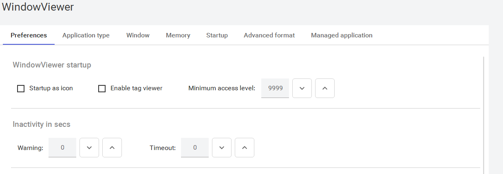
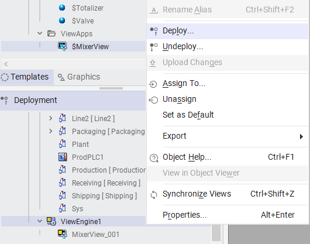

AVEVA Application Manager showing the $MixerView application tile with WindowViewer launch button, resolution labeled as Managed 1920x975, and toolbar buttons for WindowMaker (grayed out for managed apps), WindowViewer, DBLoad, and DBDump
Module 2 — Getting Started | Pages 81–86
applications. When an application is started in WindowViewer, the windows that are configured to open by default are started in runtime, unless WindowViewer is called from WindowMaker for testing the application. In this case, the windows opened in WindowMaker are opened in WindowViewer. Information displayed in WindowViewer is real-time application data from the plant floor. Processes can then be controlled by the operator by clicking items on the screen. WindowViewer Properties WindowMaker includes many options for customizing the WindowViewer runtime environment. For example, you can set the blink frequency for Blink animations, the system inactivity timeout and warning values for automatic logoff, and the windows that are automatically opened when WindowViewer is started. These customizations for runtime are found in WindowMaker by selecting File | Configure | WindowViewer. The following tabs are available: Preferences: Contains miscellaneous WindowViewer runtime behavior options, such as I/O, automatic logoff, and virtual keyboard access. Application type: Contains options for licensing support. Window: Contains options for hiding and showing runtime menu items, locking down keyboard keys, and application resolution. Memory: Sets the minimums in RAM for storing and retrieving Industrial graphics. Startup: Contains the selection of windows to open on startup. Advanced format: Contains runtime data precision and numerical formatting options. Managed application: Contains settings for the working directory of the deployed application, script timeout period, and operator experience for deployed changes. This section provides a brief overview of InTouch WindowViewer and explains how to deploy and run a Managed InTouch application.

environment. The InTouchViewApp object manages the check-in, check-out, and deployment of an InTouch application. The InTouchViewApp object includes the capabilities of the Application Server InTouchProxy object, so that InTouch tags can be referenced by Application Server Message Exchange clients as InTouchViewApp attributes. The InTouchViewApp object is used to incorporate InTouch applications into an overall system defined by a Application Server Galaxy. The Application Server system manages: Check-in and check-out for multiple users Security restrictions on who can deploy the InTouch application and when the InTouch application can be deployed Backup and restore Deployment and undeployment The InTouchViewApp object allows application objects running on a ViewEngine object to access InTouch tags as if they were Application Server attributes of the InTouchViewApp object itself. The tags are browsed through the standard Application Server attribute browser. You can create an InTouch application by deriving an InTouchViewApp object from the standard template $InTouchViewApp. Creation includes the choice of starting a new application from scratch or through the use of an application template. Application templates enable you to quickly create a new application based on the standards specified in the template. You select which template you want to base your application on using the Application Template Browser. The templates available in the Application Templates Browser are exported .aaPKG files that are loaded from an Application Templates folder in the InTouch installation directory. For example: C:\Program Files(x86)\Wonderware\InTouch\ApplicationTemplates You can also create an InTouch application using a copy of an existing application. Either way, opening an InTouchViewApp object launches WindowMaker. There is no object editor for the InTouchViewApp object. In WindowMaker, in File | Configure | WindowViewer, the Managed application tab contains settings for managing the update and deployment behavior for InTouch. You can assign multiple InTouchViewApp objects to the same ViewEngine object to make multiple InTouch applications available on a node. However, only one InTouch application per node can run at a time. To run an InTouch application on an Application Server Platform: Create and assign a ViewEngine object to a Platform. Create an instance of the InTouchViewApp object from the template that defines the InTouch application. Assign the InTouchViewApp instance object to the ViewEngine instance object. Deploy the ViewEngine object and the InTouchViewApp objects assigned to the ViewEngine object. Run the AVEVA Application Manager to select the application and run WindowViewer; this only needs to be done the first time.
object. A ViewEngine object hosts InTouchViewApp objects, as well as ViewApp objects. The ViewEngine object supports common engine features, such as deployment, undeployment, startup, and shutdown. The ViewEngine does not support redundancy. One ViewEngine object can handle several InTouchViewApp objects. However, only one InTouch application per node can run at a time. The ViewEngine object: Is assigned to and deployed to a WinPlatform object Hosts and executes InTouchViewApp objects; the scan rate of the ViewEngine object determines the scan rate of all its hosted InTouchViewApp objects Contains the logic to set up and initialize InTouchViewApp objects when they are initially deployed and started, so that they can communicate with other objects within the Galaxy Does not need to be running in order for WindowViewer to execute its scripts or access process data Can host Application Server scripts and UDAs; these continue to run when WindowViewer is shut down Provides a set of configuration and runtime attributes Contains its own set of runtime diagnostic attributes that can be monitored, alarmed, and historized Can include the Historian as part of the ViewEngine object configuration; all InTouchViewApp objects that the ViewEngine object hosts use this historian Does not support redundancy Historization and alarm options of the ViewEngine object may not need to be used. Because a ViewEngine object only hosts InTouchViewApp objects, InTouchViewApp objects only serve as a proxy for InTouch tags. As such, when referencing tags as InTouchViewApp attributes, a shorter ScanPeriod on the ViewEngine object can minimize the latency of tag value updates.
application. Before a Managed InTouch application can be used in a production environment, it must be deployed to the target platform(s) from the IDE. An instance of the $InTouchViewApp template is treated as any other object and must be deployed to the target node. You can deploy a Managed InTouch application from the IDE to the local node or a remote node. After you deploy the application, you can run it in WindowViewer on the remote node.

run, it searches the computer for any existing InTouch applications. Applications appear as tiles in the interface. When a managed application tile is selected, several toolbar buttons are grayed out, such as WindowMaker, DBLoad, and DBDump. These functions are not available for Managed InTouch applications. To run a Managed InTouch application, click the WindowViewer button on the tile for the application.
1. What are the key concepts covered in this lesson about Runtime Environment and Application Design?
Review the sections above for the main topics, step-by-step procedures, and important configuration details.
2. How does this topic relate to AVEVA System Platform?
This is part of the InTouch HMI layer, which integrates with Application Server's Galaxy for a complete visualization solution.
Module 2 — Getting Started. AVEVA InTouch for System Platform 2023 Training.
Next: Lesson 10 — Lab 4 – Deploying an InTouch Application